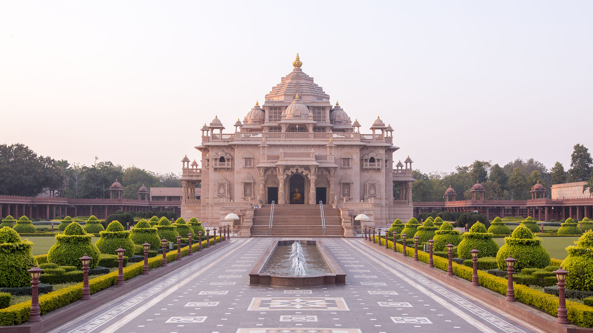
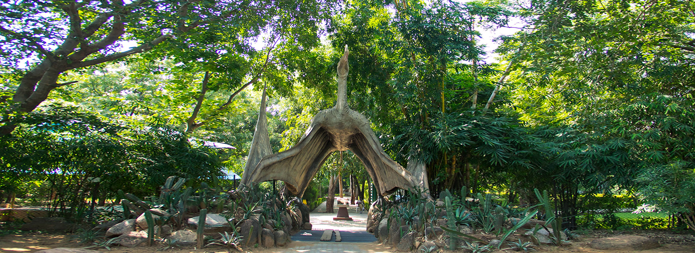
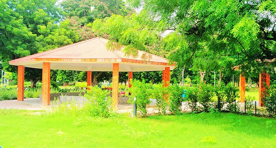
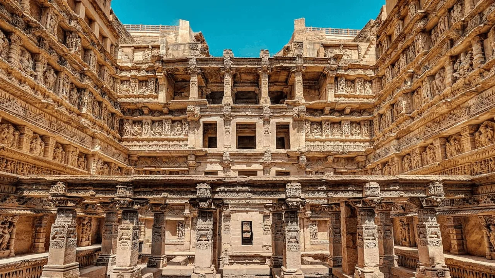

Gandhinagar Akshardham: A Spiritual Marvel
Gandhinagar Akshardham is a magnificent temple complex that showcases the rich cultural heritage of India.
Fun Fact:
~It is one of the largest Hindu temples in Gujarat, built without steel!
Things to Explore at Gandhinagar Akshardham:
-
The Main Temple:
Marvel at the intricately carved temple made of pink sandstone and white marble.
-
The Exhibition Halls:
Explore exhibitions that depict Indian history, culture, and spirituality.
-
The Musical Fountain:
Enjoy the spectacular light and sound show that narrates the life of Bhagwan Swaminarayan.
-
The Gardens:
Relax in the beautifully landscaped gardens adorned with fountains and sculptures.
-
The Yagnapurush Kund:
Visit the largest stepwell in the world, which is a part of the temple complex.
Why Visit Gandhinagar Akshardham?
!Because it’s a blend of spirituality, art, and architecture that leaves you in awe!

Indroda Nature Park: A Green Oasis
Indroda Nature Park is a sprawling green space that offers a perfect escape from the city’s hustle and bustle.
Fun Fact:
~It is one of the largest zoos in India and is home to a variety of flora and fauna!
Things to Explore at Indroda Nature Park:
-
The Zoo:
Visit the zoo that houses various species of animals, including lions, tigers, and birds.
-
The Botanical Garden:
Explore the botanical garden with its diverse collection of plants and trees.
-
The Dinosaur Park:
Discover life-sized dinosaur replicas that make it a unique attraction.
-
The Walking Trails:
Enjoy leisurely walks along the well-maintained walking trails amidst nature.
-
The Picnic Spots:
Relax at the designated picnic spots with family and friends!
Why Visit Indroda Nature Park?
!Because it’s a perfect place for nature lovers and families looking for a day out in the green!

Sarita Udyan: A Serene Park by the River
Sarita Udyan is a beautiful riverside park that offers a tranquil escape with its lush greenery and scenic views.
Fun Fact:
~It is a popular spot for morning walks, picnics, and family outings!
Things to Explore at Sarita Udyan:
-
The Walking Trails:
Enjoy peaceful walks along the well-maintained walking trails by the river.
-
The Children’s Play Area:
Let your kids have fun at the dedicated play area with swings and slides.
-
The Boating Facility:
Experience boating on the calm waters of the river.
-
The Picnic Spots:
Relax at the designated picnic spots with family and friends.
-
The Scenic Views:
Enjoy the picturesque views of the river and surrounding greenery!
Why Visit Sarita Udyan?
!Because it’s a perfect place for relaxation, recreation, and enjoying nature!

Adalaj Stepwell: A Marvel of Ancient Architecture
Adalaj Stepwell is a stunning example of Indo-Islamic architecture, known for its intricate carvings and historical significance.
Fun Fact:
~It was built in the 15th century and served as a water reservoir for travelers!
Things to Explore at Adalaj Stepwell:
-
The Main Well:
Admire the beautifully carved pillars and intricate designs that adorn the stepwell.
-
The Surrounding Gardens:
Stroll through the lush gardens that enhance the beauty of the stepwell.
-
The Historical Significance:
Learn about the history of the stepwell and its importance in the region.
-
The Photography Opportunities:
Capture stunning photographs of the architectural marvel and its surroundings.
-
The Cultural Events:
Participate in cultural events and exhibitions held at the stepwell!
Why Visit Adalaj Stepwell?
!Because it’s a masterpiece of ancient architecture and a glimpse into Gujarat’s rich heritage!